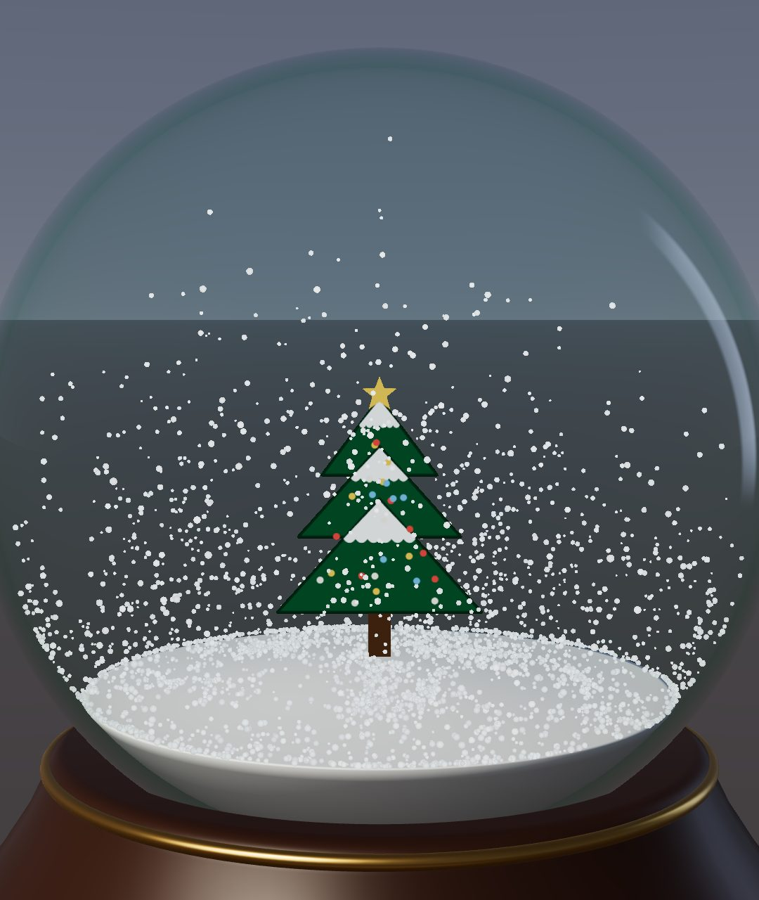
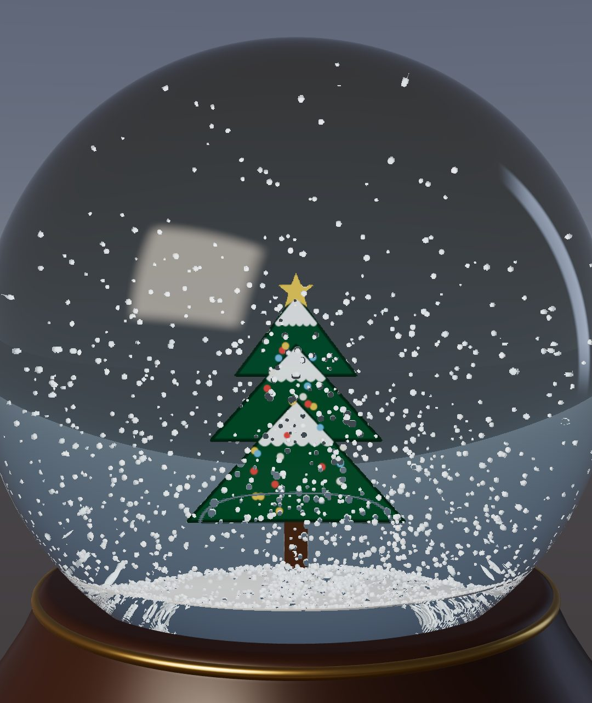
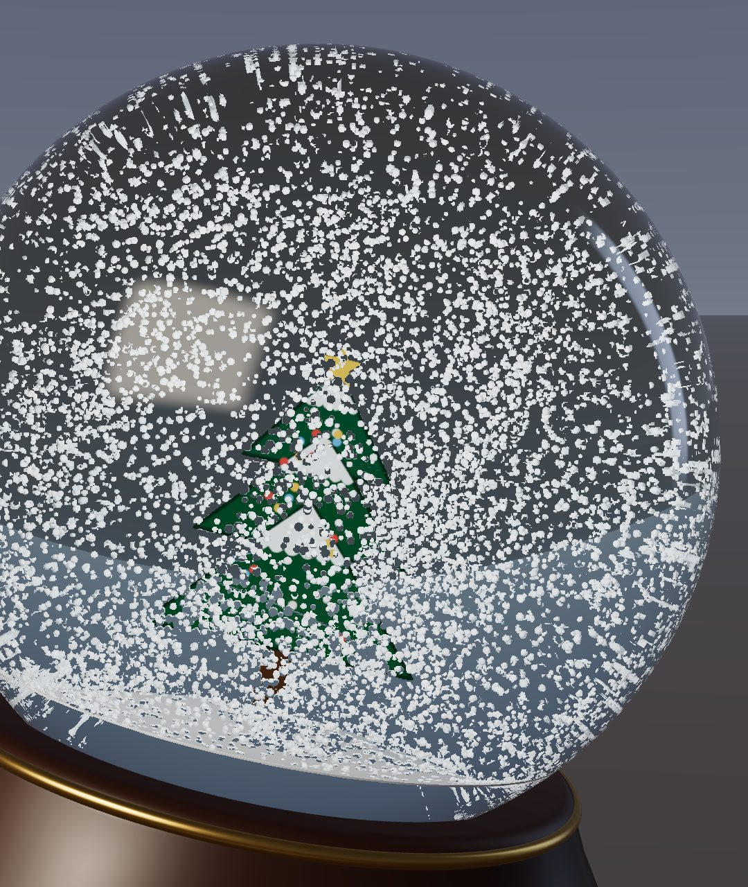
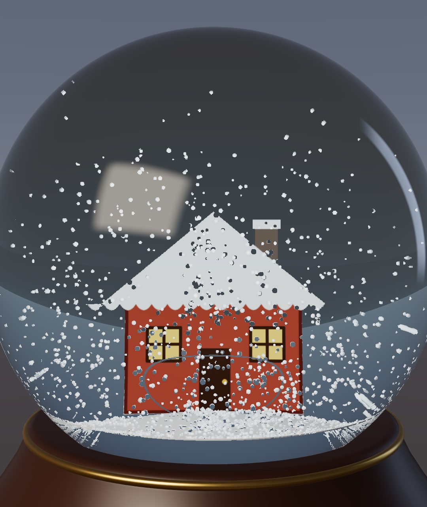

Jaansi Parsa, Pranav Kannepalli, Adam Hacker, Katia Jacoby
What we have accomplished
The full baseline from our proposal runs in the browser, plus our first stretch goal. Try it: pick a sketch or drop in your own image, then drag the globe to shake it.
Our own glass shader. The shader intersects the exact sphere, applies Schlick's Fresnel for reflections, and refracts twice with Snell's law (air to glass at 1.5, glass to water at 1.33). It then ray-marches the bent ray against the depth buffer of a separate interior pass. Rays that hit nothing leave through the back, refracting twice more. Water and glass add Beer–Lambert absorption.
GPU snow. Flake positions and velocities live in float textures that we ping-pong each frame. Flakes feel gravity minus buoyancy, drag toward the water's velocity (integrated exactly, so it is stable at any frame rate), and an inertial force when the globe accelerates. They bounce off the glass and stick to the floor.
Curl-noise water. The flow is the curl of a simplex-noise potential, so it is divergence-free. Bridson's boundary ramp keeps it running along the glass, not through it. Shaking adds a lagging slosh and turbulence that decays over a few seconds.
Shaking. The globe follows the mouse on a spring and wobbles on release. Stretch goal done: on phones, the accelerometer (DeviceMotion, with the iOS permission prompt) shakes it.
Preliminary results

Refraction off

Full optics

Mid-shake

Another subject
The water-filled sphere acts as a ball lens. It magnifies the subject about 1.4×, squeezes the floor into a thin band, and adds a Fresnel rim.
How many flakes can we push? Our benchmark times each pass without vsync. It runs 20 iterations, syncs with a one-pixel readback, and keeps the best of 3. Test setup: Apple M1 Pro, Chrome, a 2400×1600 buffer, and the snow at full turbulence.
Flakes
Snow sim
Interior
Glass
Frame
FPS
4,096
0.26 ms
0.31 ms
3.9 ms
4.1 ms
246
16,384
0.26 ms
0.36 ms
3.9 ms
3.8 ms
264
65,536
0.56 ms
0.50 ms
4.2 ms
4.5 ms
221
262,144
1.1 ms
1.4 ms
3.5 ms
5.6 ms
180
Even 262K flakes, 60× our target, run at 180 fps. The snow is cheap. The 64-step glass ray march takes most of the frame at every flake count, so that is the pass to optimize.
Progress relative to our plan
We are ahead of schedule. Weeks 1–2, most of week 3, and the first week-4 stretch goal are done. We dropped Vite for plain ES modules with an import map, so the same files run on GitHub Pages without a build step. Still open:
The comparison against a ray-traced render is not done yet.
We have only tested phone shake with emulated motion events, not on a real phone.
Flakes streak at the very rim, where the screen-space march breaks down. Snow passes through the subject card, and reflections inside the glass are ignored.
Updated work plan
Week 3: compare a path-traced render to ours. Test phone shake on iOS and Android. Fix the rim streaks and add flake collisions with the subject. Pile snow up on the floor with a height field.
Week 4: Gaussian-splat subjects, then caustics and dispersion, as time allows. Add a snapshot button. Make the final video, slides, and report.